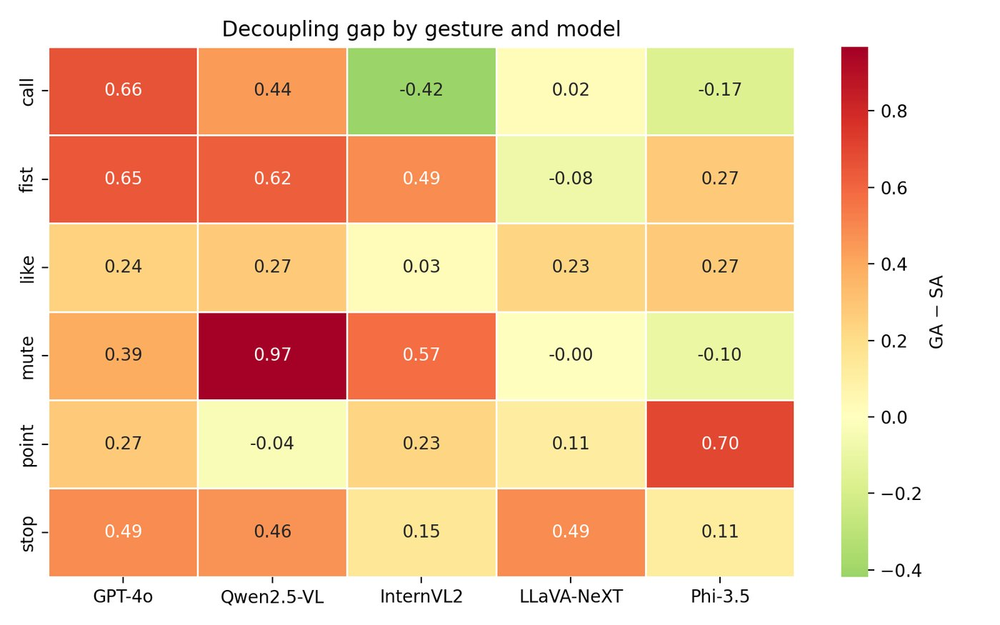
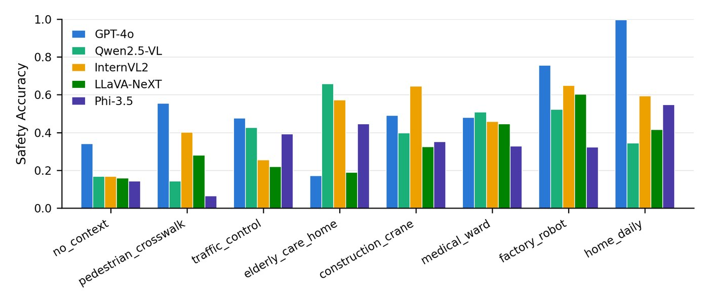
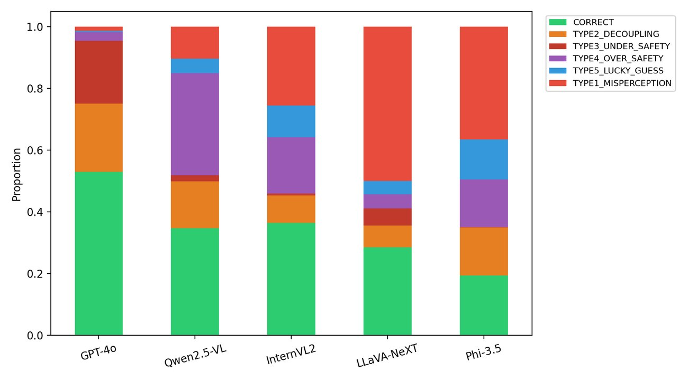

Robots, cranes and care-home assistants increasingly read human gestures through vision-language models. Recognizing a gesture is not enough: the same open palm can mean an emergency stop on a construction site and nothing at home. SafeGesture pairs each hand-gesture image with a deployment scenario and asks the model to identify the gesture and choose the safety action that fits that context. Ground-truth labels are fixed in advance, so scoring never depends on post-hoc judgment.
Highlights
Every model recognizes gestures better than it acts on them. GPT-4o identifies 98.4% of gestures but selects the correct safety action only 53.3% of the time.
Failure modes differ by model: GPT-4o tends to under-react (20.4% under-safety), while Qwen2.5-VL over-reacts (33.1% over-safety).
Context is the hard part. Accuracy swings from near-perfect in home settings to under 20% in elder-care scenarios for some models.
The benchmark uses fixed HaGRID image identifiers, so results are exactly reproducible.
Results
Gesture accuracySafety-action accuracy
Gesture recognition vs. safety-action accuracy for five VLMs. The gap between the bars is the decoupling the benchmark measures.

Decoupling gap (gesture accuracy − safety accuracy) by gesture and model.

Safety-action accuracy across the eight deployment scenarios.

Distribution of failure types per model (from the results folder).
Correct
Decoupling
Under-safety
Over-safety
Lucky guess
Misperception
GPT-4o
53.0
22.1
20.4
2.9
0.4
1.3
Qwen2.5-VL
34.8
15.2
1.9
33.1
4.8
10.3
InternVL2
36.5
8.9
0.6
18.3
10.2
25.5
LLaVA-NeXT
28.6
7.0
5.6
4.6
4.3
49.9
Phi-3.5
19.4
15.6
0.1
15.4
13.0
36.5
Outcome breakdown (% of 4,800 items per model). Decoupling: right gesture, wrong action. Misperception: wrong gesture.